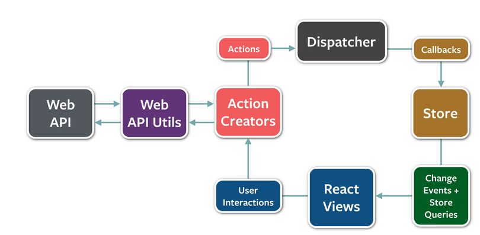
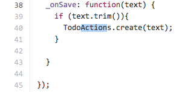
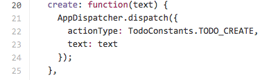
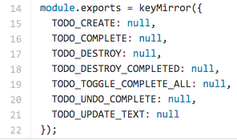
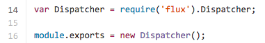
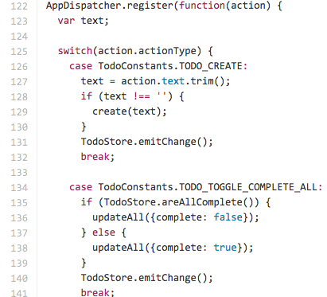
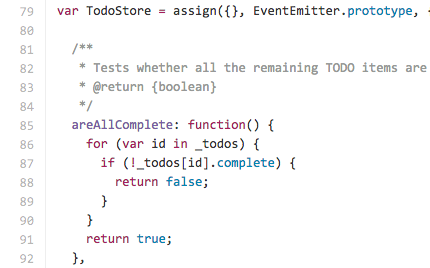

Intro to Flux
There are many good react tutorials out there. The best intro one being probably Facebook's own Thinking in React. Here are a whole slew of react tutorials on github. Facebook makes the react tutorials very accessible.
Unfortunately when you go to Flux's main page you are presented with a vague 40 minute video that is filmed in the middle of a conference presentation.
The github page for flux isn't much better, as the first thing they present is this high level diagram that doesn't make sense without context since Flux eschews the traditional MVC paradigm in favor of a more logic in views and event based framework. Take a look at the diagram yourself: 
If anything it is overwhelming since you don't understand what half those words mean. So I am going to try to break down Flux in an easier way to understand.
SKIP TO HERE TO AVOID INTRO:
I will use Flux MVC example as a guide so you can look at code.
Lets say you are in a react componenet building out a view. Now let's say a user clicks on something that would either change that react component/view or bring you to a whole new one. You would then want to emit an action as we can see on line 26, and 38-45

Note: if you look on line 11 you can see the action is required. Use Browserify and Reactify to allow requiring files on the client side in React.
Actions use the Dispatcher to emit that event.

On line 22 we see a constant. Constants are just are not mentioned as an essential part of Flux but I see them in many Flux archetictures. They just specify the actionType.

The app dispatcher itself is just an event emitter. As you can see we do get it straight from Facebook's Flux.

The main part of the dispatcher is actually within the store that you plan to utilizer, usually at the bottom of the file.

Here we listen for the action and then invoke the callback function that is within the store.
The store handles the callback function as we can see on line 102.

Often the store will handle the data that the view relies on and changes depending on it. It is a store of functions that modify data.
So to summarize: We do something in the view, fire an action, the dispatcher listens for the action and invokes the corresponding registered the callback, function and the store runs the callback function, changing what is in the view.
For the record, the best intro flux tutorials I have read are scotch's and one called Flux for stupid people.